"Childhood in Saigon" was previously submitted to literary agents and small presses. It is now available here for readers to enjoy.
Childhood
Family
I was born in Saigon, on June 1, 1960. Both of my parents were from North Vietnam. They both moved South in 1955, along with about 1 million mostly Catholic Vietnamese. My parents were Buddhists.
After the French were defeated at Dien Bien Phu in 1954, both Vietnam and France signed the Geneva Peace Accords. Under the terms of the Geneva Accords, the country was temporarily divided at the seventeenth parallel. A national election was supposed to be held in 1956 for a president of Vietnam.
Vietnam agreed to this temporary division to allow the French its dignity, and at the urging of its allies: Russia and China. Both of these countries did not want to provoke the United States, a French ally during the war against Vietnam. Ho Chi Minh led the Viet Minh in the war for independence against the French. He was already a national hero, and would have won the national election by a landslide.
But the history of Vietnam is a long and sorrowful one. The war came upon my generation like many previous generations of Vietnamese in the past. This war was always a backdrop of my childhood years in Vietnam. Once again, we were invaded by the most powerful nation of its time — the United States of America. But unlike other wars of the past, the enemy this time was particularly cruel and inhuman.
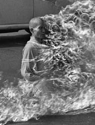
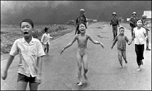
In 1956, the Eisenhower administration of the United States installed a counter revolutionary government in South Vietnam, with Ngo Dinh Diem as the head of the government. Diem prevented the national election from taking place in 1956 according to the Geneva Accords. Instead, he rigged an election for the presidency of South Vietnam, with himself receiving more votes than the total number of registered voters. In 1959, Diem's government began to put all suspected Communists in prisons without a trial and subjected them to tortures, with the approval of the United States government. Diem, a devout Catholic, declared Catholicism to be the official religion of Vietnam, and began to persecute and oppress the Buddhists in South Vietnam. As a selfless gesture of protest against religious persecution, a monk by the name of Thich Quang Duc immolated himself at a busy intersection in Saigon on June 11, 1963.
Up until 1960, North Vietnam still wanted to unify Vietnam through political means. However, as Diem's government intensified its attack on political dissidents, North Vietnam approved the creation of the National Liberation Front in South Vietnam to overthrow Diem's government through both political and armed struggle. Thus, the war in Vietnam began in earnest the year I was born.
I was born to a poor family. We are a big family, even by Vietnamese standards. I have two older brothers, one younger brother, and three younger sisters. I am the third oldest child. Unlike my relatives who held high military and political positions with the government of South Vietnam, my father was a low-ranking policeman for the government of Saigon.
My father was a very intelligent man, but he didn't have the opportunity to go to college. My father and my uncle were raised by my grandmother, a single mother. I don't think my relatives on my father's side were very well-to-do in North Vietnam prior to moving to South Vietnam in 1955.
I have never met my mother's side of the family. She was the only one in her family to move south. I think she would have stayed in North Vietnam if it wasn't for being married to my father. I do know that my mother's family was wealthy in North Vietnam.
It is still a mystery to me as to why my parents would move south in 1955. My relatives told me that the North Vietnamese would torture and kill landowners, but my relatives were neither wealthy nor landowners in North Vietnam.
School
My elementary school years were unremarkable. When I was twelve years old, my parents sent me to live with my grandmother. I think my parents weren't able to care for all of us. I suppose a policeman's salary in Saigon was grossly inadequate.
My grandmother's house was huge. There were actually two houses within one compound. My grandmother lived in one house, and my uncle's family lived in another. My uncle was a high-ranking military officer, I think one step below a one-star general, and he was also a military judge. They enrolled me in the sixth grade at a school for children of military officers. There was no tuition, and the school was located inside a military base. Most of the teachers were civilians. I studied at this school until the seventh grade, when I left Vietnam at the end of the war.
Although I can't write in Vietnamese anymore, I was a good writer in the seventh grade. I was also a good speaker. Our school was co-ed, but each classroom was segregated by gender. Occasionally, the teacher would invite the best female students from the same grade to visit our classroom for a debate. The theme of a debate was about a book that we would have read in advance.
Our class would then select the best students for a team of about five students. We would present our understanding of the book and then take questions from the female students. The goal was to outwit the other team. I was usually the main speaker and took most of the questions.
I was always a leader and a rebel. The principal at our school did not like me. He perceived me as a threat and wanted to make an example out of me. One day, there was a large military truck parked near our school. A group of my classmates and I climbed onto the truck to play. Eventually, some of us got inside the cab and turned the ignition key. We all ran away when the principal came out to investigate.
He singled me out for punishment. The punishment was being hit by a rod on the buttocks. I don't know how many times I was hit, but I remember taking my punishment without flinching or making even a whimper. This only infuriated him even more as he would continue hitting me harder. When he saw that I was being defiant, he decided on the ultimate way to humiliate me. I was to kneel by the flagpole in the middle of the schoolyard so that all of the students could see. I had to kneel by that flagpole for half of the school day through the mid-afternoon sun. At one point, I thought about getting up and leaving, but I also knew that I wouldn't be able to go to school anymore, and I wanted to be in school.
One day, a student told the teacher that someone had stolen his book. The teacher couldn't find out who the thief was, so he got the principal to come to our classroom. The principal said he would punish the whole class unless the one who stole the book would stand up and identify himself. After what seemed like a very long five minutes of silence, the person who stole the book wouldn't identify himself. I knew the principal would punish everyone, and I just couldn't let him do it. I stood up and said I stole the book. He looked at me, then asked where I kept the book. I couldn't say where the book was, because I didn't have it. He didn't say anything and then walked away. After that incident, he never picked on me again. I think he knew I had the respect of my peers.
The War
"The sound of one hand clapping" — Zen Koan
Our next-door neighbor's oldest son was in the military. But he deserted and hid in the attic for months. One day, the military police came and took him away. A few months later, he was killed in action. His family was very poor and his mom was a single mother. His father had died from tuberculosis.
When his younger brother became close to eighteen years old, his mother didn't want the younger brother to get drafted into the military. One night, she borrowed a butcher knife from our family and chopped the younger son's right index finger off.
"I love the smell of napalm in the morning" — Apocalypse Now
Since I lived in Saigon, the capital city of South Vietnam, I didn't see the destruction that was happening all around us. We were kept in the dark about the atrocities of the war. The school I went to didn't teach us about the war at the time, and the media was controlled by the South Vietnamese government.
about My Lai
or napalm
or anti-personnel
cluster bombs
I didn't know about B-52s
and carpet bombings
or Huey helicopters
shooting farmers
working in the fields
I didn't know
about Agent Orange
I didn't know they thought of us as "Gooks"
to be added to the body counts
and I didn't know they killed
over 3 million of us
of which 2 million were civilians
Note: According to the Vietnamese government's official 1995 statistics, approximately 2 million civilians on both sides and 1.1 million military personnel were killed during the war. The U.S. military estimates 200,000–250,000 South Vietnamese soldiers killed. The Vietnamese government also estimates that up to 4 million people were exposed to Agent Orange, with as many as 3 million suffering illnesses and approximately 500,000 children born with birth defects.
Walking the Plank
The day before I left Vietnam, my family and I went to stay at the home of some wealthy relatives. Their house was large and well built, and my parents thought it would be safer to stay at their house. I couldn't sleep very well that night. There were artillery shelling near Saigon, and at the airport. Our relatives' house shook all night from the shelling.
On the morning of April 30, 1975, people were running around aimlessly in Saigon. The people were afraid. They could anticipate that the end of the war was near, and they were trying to find a way to get out. During the war, there were countless propaganda shows on television about the Communists committing massacres in the cities they had captured, and how they would also bury people alive in common graves. There was also one particular television drama showing how the Communists would torture these people by pulling out their fingernails with pliers. Even though I had never met any Communist, I was afraid from the stories I had seen on television. I think my parents were also afraid that the Communists would take revenge against them for moving South in 1955.
That morning, my family and I went to the main port of Saigon where large ships would dock. There were so many people, and no ship would come to the dock because the people would try to get on board. I became separated from my family due to the sheer number of people crowding around.
I was standing by the dock when this large ship moved along close to the dock. There were so many people on that ship. A man who stood near me found a long piece of planking and he placed it between the dock and the side of the moving ship. He walked on that plank and got on board. Several other people including me walked on that same planking and got aboard the ship.
The ship continued to move toward the river. I found out later there were about four thousand people on that ship. It was some kind of a cargo ship, by the name of "Truong Xuan," which means "Eternal Spring." I know "Xuan" means Spring, but I am not sure now what "Truong" means. My Vietnamese is not that good now.
It was before noon when I got on that ship. The ship moved along that river until sometime in the afternoon when it got stuck in the sandbar. When nighttime came, we could see fireworks lighting up the sky in Saigon. I think there was a celebration of some sort.
The next morning, there was a South Vietnamese Navy patrol boat with several people on board. They pulled us off the sandbar then abandoned their patrol boat after getting on our ship. We continued on that river toward the sea. As we passed an island on our way to the open sea, the people on our ship were afraid we might get shot at by the Communists on that island.
There wasn't enough room on that ship for four thousand people. People could find enough room to lie down, but to walk around the ship was almost impossible. The ship didn't have food or water. Perhaps there was food and water for the crew and for a group of selected people, but for the majority of us, there was neither food nor water. After two days at sea without water, I tried but was unable to drink my own urine to quench my thirst. The ship developed engine trouble, and the engine room became flooded with water. We drifted around for most of the second day at sea.
On the third day, a Danish ship rescued us. We all boarded their ship and abandoned our ship at sea. I still didn't have any food to eat, but there was fresh water to drink. The Danish ship took two days to get us to Hong Kong, where we were processed and then trucked to the refugee camp.
Since I was by myself, they put me in a camp with other single men. Others were sent to the family camp. At fourteen years old, I was the youngest person in the single men's camp. Most of the men in that camp were in the military, and they were a tough bunch. I was too young to associate with these men, so I played with other boys around my age.
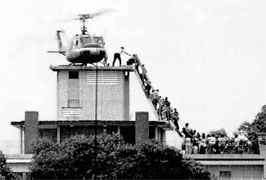
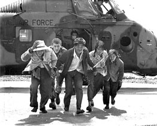
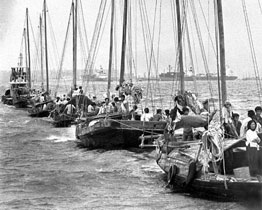
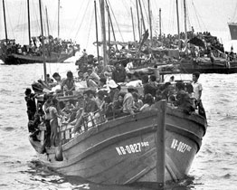
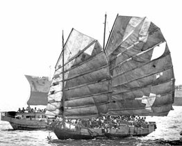
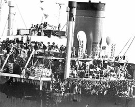
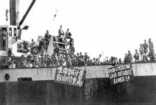
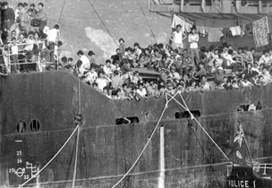
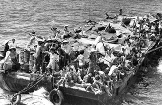
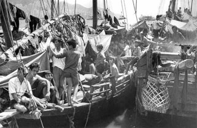
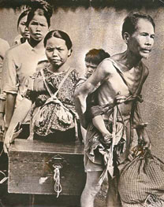
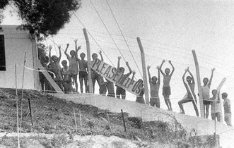
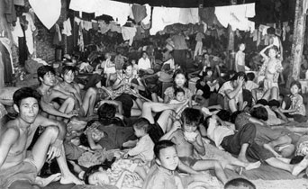
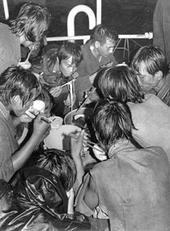
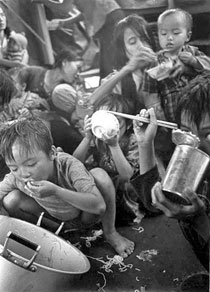
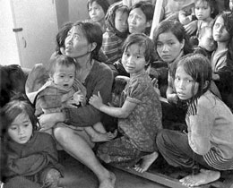
I lost track of time when I was in that camp. The camp was enclosed by barbed wire, and either the Hong Kong police or the British Gurkhas were guarding the camp 24 hours a day. We weren't allowed to leave the camp. I felt lonely and hungry most of the time I was there. They didn't feed us enough. There was no breakfast. Lunch and dinner was usually a bowl of rice and a couple cubes of stewed fatty pork.
One night I couldn't sleep, so I walked to the courtyard. Out of the darkness, I heard a grown man sobbing. It was the saddest sound I've heard in my life.
One day I heard my name on the list of people chosen for the United States on the loudspeaker. I didn't feel anything. Perhaps I was too numb to feel anything. But several men approached me that day and congratulated me for being taken in by the United States. We were trucked to the airport and boarded a DC-10 for a refugee camp in Pennsylvania.
© Tuan Tran. All rights reserved.